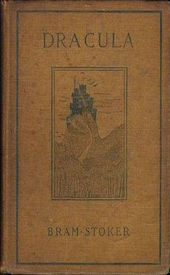
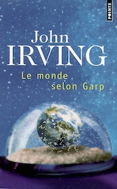

After 4 years working as an analyst in a French FinTech, I decided to go back to school and learn to code!
|  |
DraculaDracula is an 1897 Gothic horror novel by Irish author Bram Stoker. Famous for introducing the character of the vampire Count Dracula, the novel tells the story of Dracula's attempt to move from Transylvania to England so he may find new blood and spread undead curse, and the battle between Dracula and a small group of men and women led by Professor Abraham Van Helsing. |
Les Liaisons DangereusesLes Liaisons dangereuses is a French epistolary novel by Pierre Choderlos de Laclos, 1782. It is the story of the Marquise de Merteuil and the Vicomte de Valmont, two rivals (and ex-lovers) who use seduction as a weapon to humiliate and degrade others, all the while enjoying their cruel games and boasting about their manipulative talents. |
|
|  |
The World According to GarpThe World According to Garp is John Irving's fourth novel, about a man born out of wedlock to a feminist leader who grows up to be a writer. Published in 1978, the book was a bestseller for several years. It was a finalist for the National Book Award for Fiction in 1979, and its first paperback edition won the Award the following year. |